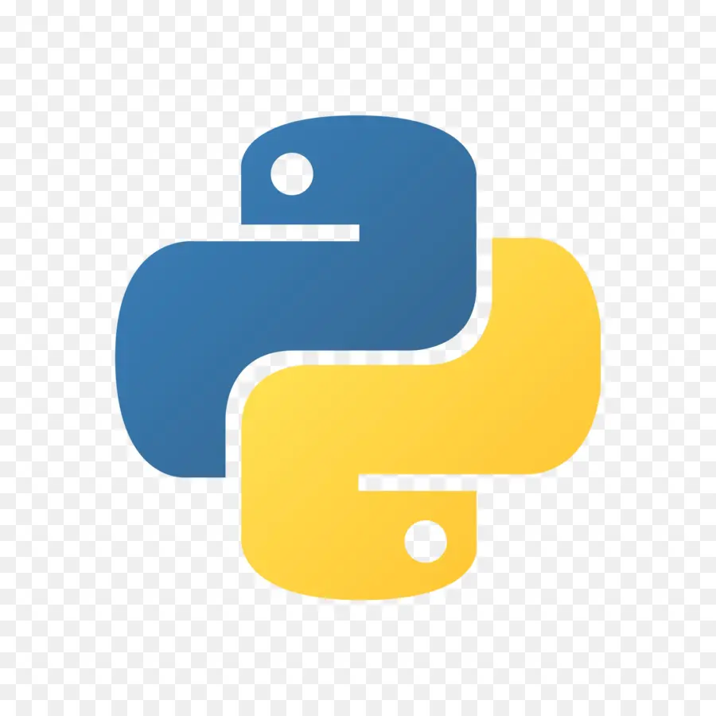
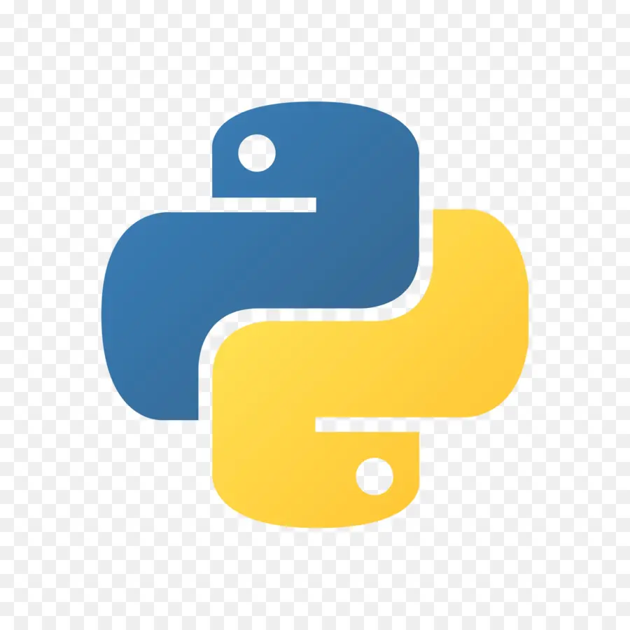

Hello, I am
Adrianne
Bachelor of Computing and Data Science at Boston University

Hello, I am
Bachelor of Computing and Data Science at Boston University
Hi there, I am Adrianne. I am super interested in game development and working toward it. I love how unexpected things can change our path, like when I first started thinking about coding in my sophomore year, which completely shifted my direction. Now, I am all about looking forward to the surprises that come with learning and creating. Welcome to my journey of crafting the unexpected!

 



Conducted a research project analyzing the correlation between students' language proficiency and their choice of major with three other groupmates. Designed and distributed a survey to 207 Boston University undergraduates, collecting quantitative and qualitative data on language fluency, learning environments, and academic preferences. Performed statistical analyses, including Fisher’s Exact Test and Ordinary Least Squares regression, to evaluate hypotheses.
Website introducing 8 different restaurant I recommend, using HTML, CSS, and Javascript. The website aims to provide users with detailed information and an engaging interface to explore dining options.
Conducted an analysis of a Facebook dataset to explore social structures, mutual friendships, and online behavior. This project contains clustering coefficients, random walks, and similarity metrics to analyze community dynamics, network resilience, and the "small-world" phenomenon.
July 2021 - August 2021
August 2022 - September 2022